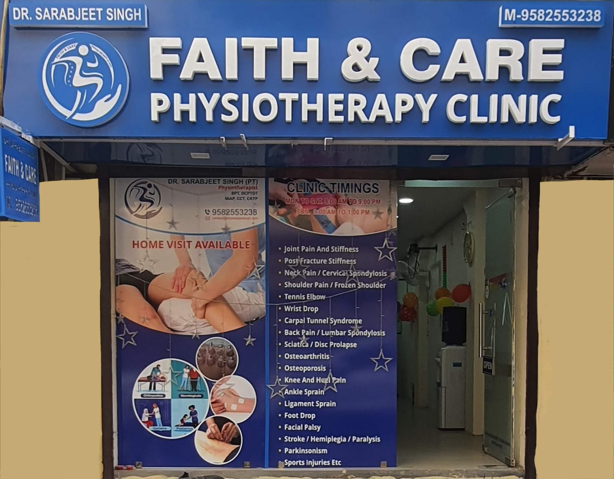

Faith & Care is a trusted rehabilitation centre helping people restore health, mobility and quality of life through advanced physiotherapy care.
For over five years, Faith & Care has delivered patient-focused, evidence-based physiotherapy under the leadership of Dr. Sarabjeet Singh. We have successfully treated more than 5,000 patients through in-clinic consultations and home physiotherapy services.
Our personalised treatment plans and advanced therapeutic techniques have helped 90% of patients avoid unnecessary surgery, while restoring function, mobility and confidence for the long term.
Personalised rehabilitation for people across age groups and conditions.
Timely intervention and clinical judgement guide every recovery plan.
Practical clinical education that helps strengthen the next generation of physiotherapists.
A clinic built on trust, expertise and compassionate care.
Patients consistently mention the warmth and patience of our team — that's deliberate, not incidental.
Sessions run on schedule and stay focused, so a visit fits around your day.
Every plan is based on physical assessment and progress tracked visit to visit.
You always know what's being treated, why, and what progress should look like.
Dr. Sarabjeet Singh is dedicated to helping patients overcome pain, restore mobility and build a healthier, more active life.
Founder & Chief Physiotherapist
BPT · Certified Cupping Therapist · Certified Kinesio Taping Practitioner · Dry Needling Specialist
With 6 years of clinical experience, Dr. Singh specialises in diagnosing movement dysfunctions, treating musculoskeletal disorders and designing personalised rehabilitation programmes that deliver long-term results. His approach combines scientific evidence, clinical expertise and clear, compassionate communication.
From young athletes and office professionals to senior citizens, every patient receives the same careful assessment, education and attention throughout their recovery journey.

Faith & Care Physiotherapy Clinic · Rajouri Garden